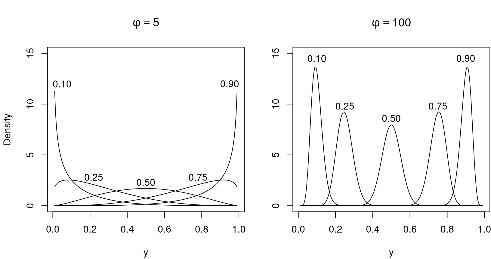
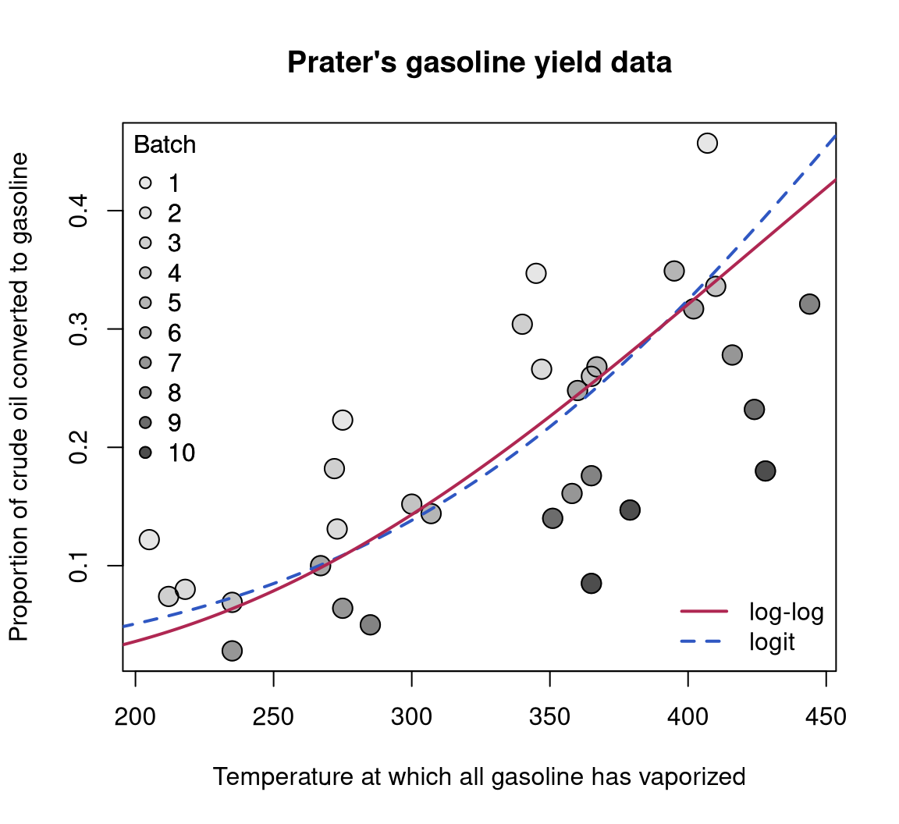
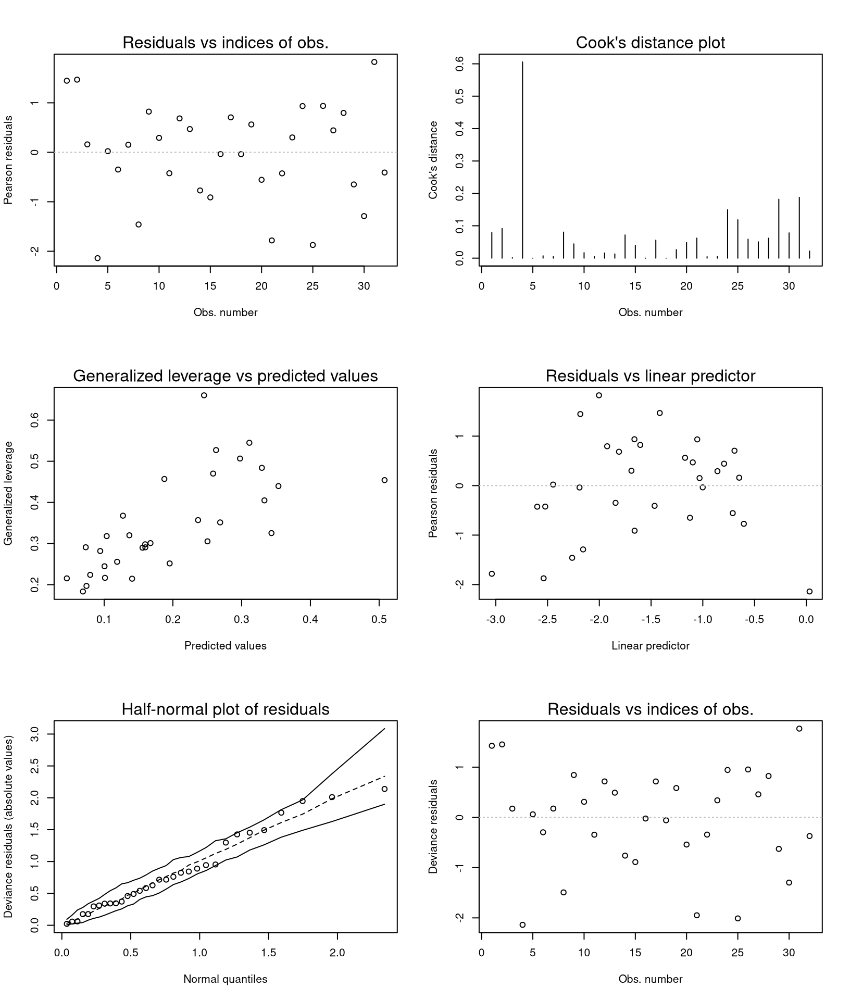
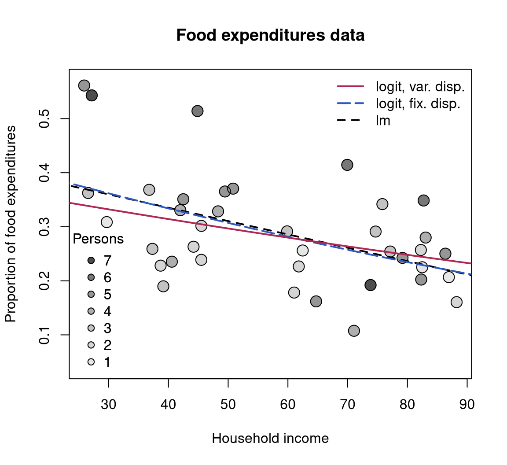
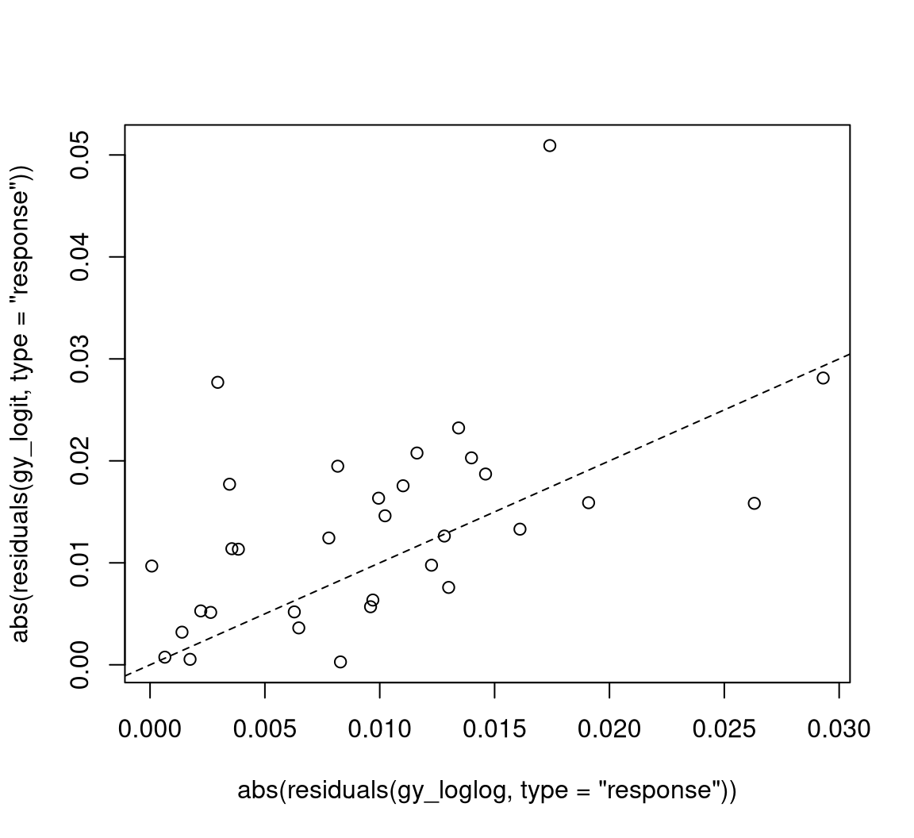
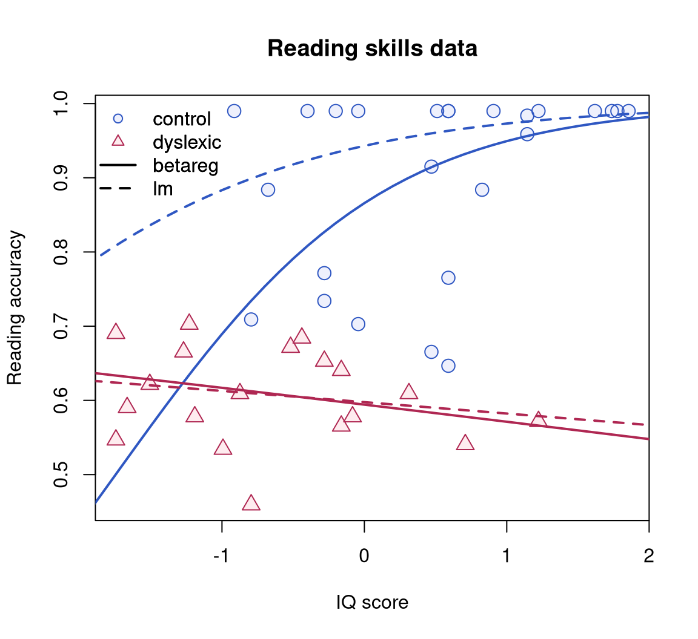
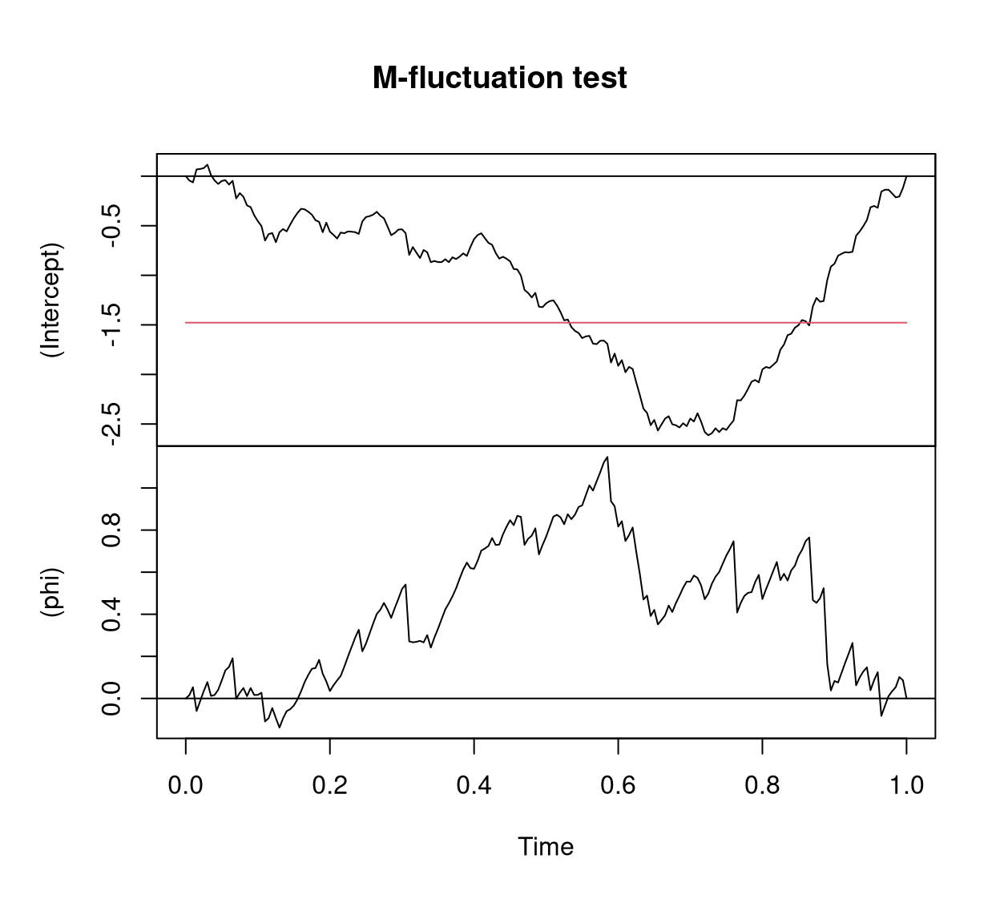
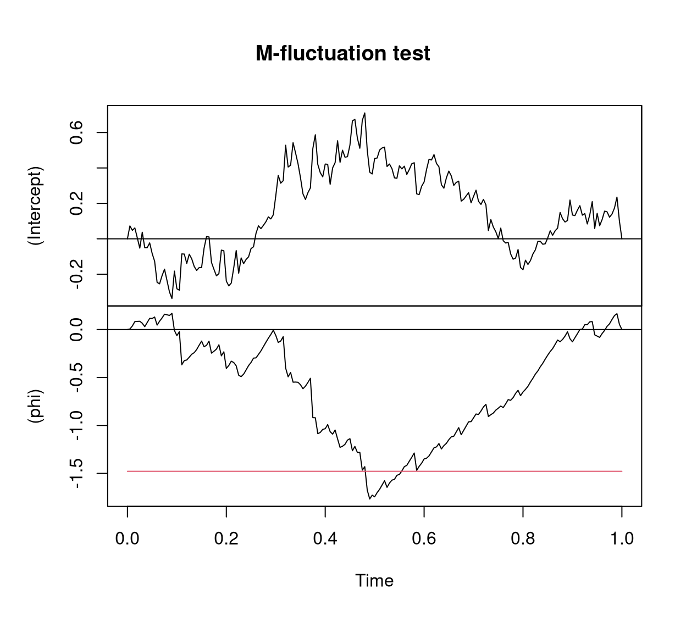

Beta Regression in R
Abstract
This introduction to the R package betareg is a (slightly) modified version of Cribari-Neto and Zeileis (2010), published in the Journal of Statistical Software. A follow-up paper with various extensions is Grün, Kosmidis, and Zeileis (2012) – a slightly modified version of which is also provided within the package as vignette("betareg-ext", package = "betareg")
The class of beta regression models is commonly used by practitioners to model variables that assume values in the standard unit interval \((0, 1)\). It is based on the assumption that the dependent variable is beta-distributed and that its mean is related to a set of regressors through a linear predictor with unknown coefficients and a link function. The model also includes a precision parameter which may be constant or depend on a (potentially different) set of regressors through a link function as well. This approach naturally incorporates features such as heteroskedasticity or skewness which are commonly observed in data taking values in the standard unit interval, such as rates or proportions. This paper describes the betareg package which provides the class of beta regressions in the R system for statistical computing. The underlying theory is briefly outlined, the implementation discussed and illustrated in various replication exercises.
1 Introduction
How should one perform a regression analysis in which the dependent variable (or response variable), \(y\), assumes values in the standard unit interval \((0,1)\)? The usual practice used to be to transform the data so that the transformed response, say \(\tilde y\), assumes values in the real line and then apply a standard linear regression analysis. A commonly used transformation is the logit, \(\tilde y = \log(y/(1-y))\). This approach, nonetheless, has shortcomings. First, the regression parameters are interpretable in terms of the mean of \(\tilde y\), and not in terms of the mean of \(y\) (given Jensen’s inequality). Second, regressions involving data from the unit interval such as rates and proportions are typically heteroskedastic: they display more variation around the mean and less variation as we approach the lower and upper limits of the standard unit interval. Finally, the distributions of rates and proportions are typically asymmetric, and thus Gaussian-based approximations for interval estimation and hypothesis testing can be quite inaccurate in small samples. Ferrari and Cribari-Neto (2004) proposed a regression model for continuous variates that assume values in the standard unit interval, e.g., rates, proportions, or concentration indices. Since the model is based on the assumption that the response is beta-distributed, they called their model the beta regression model. In their model, the regression parameters are interpretable in terms of the mean of \(y\) (the variable of interest) and the model is naturally heteroskedastic and easily accomodates asymmetries. A variant of the beta regression model that allows for nonlinearities and variable dispersion was proposed by Simas, Barreto-Souza, and Rocha (2010). In particular, in this more general model, the parameter accounting for the precision of the data is not assumed to be constant across observations but it is allowed to vary, leading to the variable dispersion beta regression model.
The chief motivation for the beta regression model lies in the flexibility delivered by the assumed beta law. The beta density can assume a number of different shapes depending on the combination of parameter values, including left- and right-skewed or the flat shape of the uniform density (which is a special case of the more general beta density). This is illustrated in Figure 1 which depicts several different beta densities. Following Ferrari and Cribari-Neto (2004), the densities are parameterized in terms of the mean \(\mu\) and the precision parameter \(\phi\); all details are explained in the next section. The evident flexiblity makes the beta distribution an attractive candidate for data-driven statistical modeling.
The idea underlying beta regression models dates back to earlier approaches such as Williams (1982) or Prentice (1986). The initial motivation was to model binomial random variables with extra variation. The model postulated for the (discrete) variate of interest included a more flexible variation structure determined by independent beta-distributed variables which are related to a set of independent variables through a regression structure. However, unlike the more recent literature, the main focus was to model binomial random variables. Our interest in what follows will be more closely related to the recent literature, i.e., modeling continous random variables that assume values in \((0,1)\), such as rates, proportions, and concentration or inequality indices (e.g., Gini).
In this paper, we describe the betareg package which can be used to perform inference in both fixed and variable dispersion beta regressions. The package is implemented in the R system for statistical computing (R Core Team 2024) and available from the Comprehensive R Archive Network (CRAN) at http://CRAN.R-project.org/package=betareg. The initial version of the package was written by Simas and Rocha (2006) up to version 1.2 which was orphaned and archived on CRAN in mid-2009. Starting from version 2.0-0, Achim Zeileis took over maintenance after rewriting/extending the package’s functionality.
The paper unfolds as follows: Section 2 outlines the theory underlying the beta regression model before Section 3 describes its implementation in R. Section 4 and Section 5 provide various empirical applications: The former focuses on illustrating various aspects of beta regressions in practice while the latter provides further replications of previously published empirical research. Finally, Section 6 contains concluding remarks and directions for future research and implementation.
2 Beta regression
The class of beta regression models, as introduced by Ferrari and Cribari-Neto (2004), is useful for modeling continuous variables \(y\) that assume values in the open standard unit interval \((0,1)\). Note that if the variable takes on values in \((a, b)\) (with \(a < b\) known) one can model \((y - a)/(b - a)\). Furthermore, if \(y\) also assumes the extremes \(0\) and \(1\), a useful transformation in practice is \((y \cdot (n - 1) + 0.5) / n\) where \(n\) is the sample size (Smithson and Verkuilen 2006).
The beta regression model is based on an alternative parameterization of the beta density in terms of the variate mean and a precision parameter. The beta density is usually expressed as
\[ f(y;p,q) = \frac{\Gamma(p+q)}{\Gamma(p)\Gamma(q)}y^{p-1}(1-y)^{q-1}, \quad 0<y<1, \]
where \(p,q >0\) and \(\Gamma(\cdot)\) is the gamma function.1 Ferrari and Cribari-Neto (2004) proposed a different parameterization by setting \(\mu = p/(p+q)\) and \(\phi = p+q\):
\[ f(y;\mu,\phi) = \frac{\Gamma(\phi)}{\Gamma(\mu\phi)\Gamma((1-\mu)\phi)}y^{\mu\phi-1}(1-y)^{(1-\mu)\phi-1}, \quad 0<y<1, \tag{1}\]
with \(0<\mu<1\) and \(\phi>0\). We write \(y \,\sim\, \mathcal{B}(\mu, \phi)\). Here, \(\text{E}(y) = \mu\) and \(\text{Var}(y) = \mu(1-\mu)/(1+\phi)\). The parameter \(\phi\) is known as the precision parameter since, for fixed \(\mu\), the larger \(\phi\) the smaller the variance of \(y\); \(\phi^{-1}\) is a dispersion parameter.
Let \(y_1,\ldots,y_n\) be a random sample such that \(y_i \sim {\mathcal{B}}(\mu_i,\phi)\), \(i=1,\ldots,n\). The beta regression model is defined as
\[ g(\mu_i) = x_{i}^\top \beta = \eta_i, \]
where \(\beta=(\beta_1,\ldots,\beta_k)^\top\) is a \(k \times 1\) vector of unknown regression parameters (\(k<n\)), \(x_i = (x_{i1},\ldots,x_{ik})^\top\) is the vector of \(k\) regressors (or independent variables or covariates) and \(\eta_i\) is a linear predictor (i.e., \(\eta_i = \beta_1 x_{i1} + \cdots + \beta_k x_{ik}\); usually \(x_{i1}=1\) for all \(i\) so that the model has an intercept).
Here, \(g(\cdot): (0,1) \mapsto
\mathrm{I\! R}\) is a link function, which is strictly increasing and twice differentiable. The main motivation for using a link function in the regression structure is twofold. First, both sides of the regression equation assume values in the real line when a link function is applied to \(\mu_i\). Second, there is an added flexibility since the practitioner can choose the function that yields the best fit. Some useful link functions are: logit \(g(\mu) = \log(\mu/(1-\mu))\); probit \(g(\mu) = \Phi^{-1}(\mu)\), where \(\Phi(\cdot)\) is the standard normal distribution function; complementary log-log \(g(\mu) = \log\{-\log(1-\mu)\}\); log-log \(g(\mu) = -\log\{-\log(\mu)\}\); and Cauchy \(g(\mu) = \tan\{\pi(\mu - 0.5)\}\). Note that the variance of \(y\) is a function of \(\mu\) which renders the regression model based on this parameterization naturally heteroskedastic. In particular,
\[ \text{Var}(y_i) = \frac{\mu_i(1-\mu_i)}{1+\phi} = \frac{g^{-1}(x_i^{\top}\beta)[1-g^{-1}(x_i^{\top}\beta)]}{1+\phi}. \tag{2}\]
The log-likelihood function is \(\ell(\beta,\phi)=\sum_{i=1}^n\ell_i(\mu_i,\phi)\), where
\[ \begin{eqnarray} \ell_i(\mu_i,\phi) & = & \log \Gamma(\phi)-\log\Gamma(\mu_i\phi) - \log \Gamma((1-\mu_i)\phi) +(\mu_i\phi-1)\log y_i \\ & & + \{(1-\mu_i)\phi-1\}\log(1-y_i). \end{eqnarray} \tag{3}\]
Notice that \(\mu_i=g^{-1}(x_i^{\top}\beta)\) is a function of \(\beta\), the vector of regression parameters. Parameter estimation is performed by maximum likelihood (ML).
An extension of the beta regression model above which was employed by Smithson and Verkuilen (2006) and formally introduced (along with further extensions) by Simas, Barreto-Souza, and Rocha (2010) is the variable dispersion beta regression model. In this model the precision parameter is not constant for all observations but instead modeled in a similar fashion as the mean parameter. More specifically, \(y_i \, \sim \, {\mathcal B}(\mu_i, \phi_i)\) independently, \(i=1,\ldots,n\), and
\[ \begin{eqnarray} g_1(\mu_i) & = & \eta_{1i} = x_i^\top \beta, \\ g_2(\phi_i) & = & \eta_{2i} = z_i^\top \gamma, \end{eqnarray} \tag{4}\]
where \(\beta=(\beta_1, \ldots, \beta_k)^{\top}\), \(\gamma=(\gamma_1,\ldots,\gamma_h)^{\top}\), \(k+h<n\), are the sets of regression coefficients in the two equations, \(\eta_{1i}\) and \(\eta_{2i}\) are the linear predictors, and \(x_i\) and \(z_i\) are regressor vectors. As before, both coefficient vectors are estimated by ML, simply replacing \(\phi\) by \(\phi_i\) in Equation 3.
Simas, Barreto-Souza, and Rocha (2010) further extend the model above by allowing nonlinear predictors in Equation 4. Also, they have obtained analytical bias corrections for the ML estimators of the parameters, thus generalizing the results of Ospina, Cribari-Neto, and Vasconcellos (2006), who derived bias corrections for fixed dispersion beta regressions. However, as these extensions are not (yet) part of the betareg package, we confine ourselves to these short references and do not provide detailed formulas.
Various types of residuals are available for beta regression models. The raw response residuals \(y_i - \hat \mu_i\) are typically not used due to the heteroskedasticity inherent in the model (see Equation 2). Hence, a natural alternative are Pearson residuals which Ferrari and Cribari-Neto (2004) call standardized ordinary residuals and define as
\[ r_{\mathrm{P}, i} = \frac{y_i - \hat{\mu}_i}{\sqrt{\widehat{\text{Var}}(y_i)}}, \tag{5}\]
where \(\widehat{\text{Var}}(y_i) = \hat{\mu}_i(1-\hat{\mu}_i)/ (1+\hat{\phi_i})\), \(\hat{\mu}_i = g_1^{-1}(x_i^\top\,\hat{\beta})\), and \(\hat{\phi}_i = g_2^{-1}(z_i^\top\,\hat{\gamma})\). Similarly, deviance residuals can be defined in the standard way via signed contributions to the excess likelihood. Further residuals were proposed by Espinheira, Ferrari, and Cribari-Neto (2008b), in particular one residual with better properties that they named standardized weighted residual 2:
\[ r_{\mathrm{sw2}, i} = \frac{y^*_i - {\hat{{\mu}}^*}_i}{\sqrt{\hat{v}_i(1 - h_{ii})}}, \tag{6}\]
where \(y_i^* = \log\{ y_i / (1-y_i)\}\) and \(\mu_i^* = \psi(\mu_i\phi)- \psi((1-\mu_i)\phi)\), \(\psi(\cdot)\) denoting the digamma function. Standardization is then by \(v_i = \left\{ \psi'(\mu_i\phi) + \psi'((1-\mu_i)\phi)\right\}\) and \(h_{ii}\), the \(i\)th diagonal element of the hat matrix . Hats denote evaluation at the ML estimates.
It is noteworthy that the beta regression model described above was developed to allow practitioners to model continuous variates that assume values in the unit interval such as rates, proportions, and concentration or inequality indices (e.g., Gini). However, the data types that can be modeled using beta regressions also encompass proportions of “successes” from a number of trials, if the number of trials is large enough to justify a continuous model. In this case, beta regression is similar to a binomial generalized linear model (GLM) but provides some more flexibility – in particular when the trials are not independent and the standard binomial model might be too strict. In such a situation, the fixed dispersion beta regression is similar to the quasi-binomial model (McCullagh and Nelder 1989) but fully parametric. Furthermore, it can be naturally extended to variable dispersions.
3 Implementation in R
To turn the conceptual model from the previous section into computational tools in R, it helps to emphasize some properties of the model: It is a standard maximum likelihood (ML) task for which there is no closed-form solution but numerical optimization is required. Furthermore, the model shares some properties (such as linear predictor, link function, dispersion parameter) with generalized linear models (GLMS, McCullagh and Nelder 1989), but it is not a special case of this framework (not even for fixed dispersion). There are various models with implementations in R that have similar features – here, we specifically reuse some of the ideas employed for generalized count data regression by Zeileis, Kleiber, and Jackman (2008).
The main model-fitting function in betareg is betareg() which takes a fairly standard approach for implementing ML regression models in R: formula plus data is used for model and data specification, then the likelihood and corresponding gradient (or estimating function) is set up, optim() is called for maximizing the likelihood, and finally an object of S3 class "betareg" is returned for which a large set of methods to standard generics is available. The workhorse function is betareg.fit() which provides the core computations without formula-related data pre- and post-processing. Update: Recently, betareg() has been extended to optionally include an additional Fisher scoring iteration after the optim() optimization in order to improve the ML result (or apply a bias correction or reduction).
The model-fitting function betareg() and its associated class are designed to be as similar as possible to the standard glm() function (R Core Team 2024) for fitting GLMs. An important difference is that there are potentially two equations for mean and precision (Equation 4), and consequently two regressor matrices, two linear predictors, two sets of coefficients, etc. In this respect, the design of betareg() is similar to the functions described by Zeileis, Kleiber, and Jackman (2008) for fitting zero-inflation and hurdle models which also have two model components. The arguments of betareg() are
betareg(formula, data, subset, na.action, weights, offset,
link = "logit", link.phi = NULL, control = betareg.control(...),
model = TRUE, y = TRUE, x = FALSE, ...)where the first line contains the standard model-frame specifications (see Chambers and Hastie 1992), the second line has the arguments specific to beta regression models and the arguments in the last line control some components of the return value.
"betareg". The first 17 functions refer to methods, the last five are generic functions whose default methods work because of the information supplied by the methods above.
| Function | Description |
|---|---|
print() |
Simple printed display with coefficient estimates |
summary() |
Standard regression output (coefficient estimates, standard errors, partial Wald tests); returns an object of class "summary.betareg" containing the relevant summary statistics (which has a print() method) |
coef() |
Extract coefficients of model (full, mean, or precision components), a single vector of all coefficients by default |
vcov() |
Associated covariance matrix (with matching names) |
predict() |
Predictions (of means \(\mu_i\), linear predictors \(\eta_{1i}\), precision parameter \(\phi_i\), or variances \(\mu_i (1 - \mu_i) / (1 + \phi_i)\)) for new data |
fitted() |
Fitted means for observed data |
residuals() |
Extract residuals (deviance, Pearson, response, quantile, or different weighted residuals), see Espinheira, Ferrari, and Cribari-Neto (2008b), defaulting to quantile residuals since version 3.2-0 |
estfun() |
Compute empirical estimating functions (or score functions), evaluated at observed data and estimated parameters, see Zeileis (2006b) |
bread() |
Extract “bread” matrix for sandwich estimators, see Zeileis (2006b) |
terms() |
Extract terms of model components |
model.matrix() |
Extract model matrix of model components |
model.frame() |
Extract full original model frame |
logLik() |
Extract fitted log-likelihood |
plot() |
Diagnostic plots of residuals, predictions, leverages etc. |
hatvalues() |
Hat values (diagonal of hat matrix) |
cooks.distance() |
(Approximation of) Cook’s distance |
gleverage() |
Compute generalized leverage, see Wei, Hu, and Fung (1998) and Rocha and Simas (2010) |
coeftest() |
Partial Wald tests of coefficients |
waldtest() |
Wald tests of nested models |
linear.hypothesis() |
Wald tests of linear hypotheses |
lrtest() |
Likelihood ratio tests of nested models |
AIC() |
Compute information criteria (AIC, BIC, etc.) |
If a formula of type y ~ x1 + x2 is supplied, it describes \(y_i\) and \(x_i\) for the mean equation of the beta regression (Equation 4). In this case a constant \(\phi_i\) is assumed, i.e., \(z_i = 1\) and \(g_2\) is the identity link, corresponding to the basic beta regression model as introduced in Ferrari and Cribari-Neto (2004). However, a second set of regressors can be specified by a two-part formula of type y ~ x1 + x2 | z1 + z2 + z3 as provided in the Formula package (Zeileis and Croissant 2010). This model has the same mean equation as above but the regressors \(z_i\) in the precision equation (Equation 4) are taken from the ~ z1 + z2 + z3 part. The default link function in this case is the log link \(g_2(\cdot) = \log(\cdot)\). Consequently, y ~ x1 + x2 and y ~ x1 + x2 | 1 correspond to equivalent beta likelihoods but use different parametrizations for \(\phi_i\): simply \(\phi_i = \gamma_1\) in the former case and \(\log(\phi_i) = \gamma_1\) in the latter case. The link for the \(\phi_i\) precision equation can be changed by link.phi in both cases where "identity", "log", and "sqrt" are allowed as admissible values. The default for the \(\mu_i\) mean equation is always the logit link but all link functions for the binomial family in glm() are allowed as well as the log-log link: "logit", "probit", "cloglog", "cauchit", "log", and "loglog".
ML estimation of all parameters employing analytical gradients is carried out using R’s optim() with control options set in betareg.control(). All of optim()’s methods are available but the default is"BFGS", which is typically regarded to be the best-performing method (Mittelhammer, Judge, and Miller 2000, sec. 8.13) with the most effective updating formula of all quasi-Newton methods (Nocedal and Wright 1999, 197). Starting values can be user-supplied, otherwise the \(\beta\) starting values are estimated by a regression of \(g_1(y_i)\) on \(x_i\). The starting values for the \(\gamma\) intercept are chosen as described in Ferrari and Cribari-Neto (2004, 805), corresponding to a constant \(\phi_i\) (plus a link transformation, if any). All further \(\gamma\) coefficients (if any) are initially set to zero. The covariance matrix estimate is derived analytically as in Simas, Barreto-Souza, and Rocha (2010). However, by setting hessian = TRUE the numerical Hessian matrix returned by optim() can also be obtained. Update: In recent versions of betareg, the optim() is still performed but optionally it may be complemented by a subsequent additional Fisher scoring iteration to improve the result.
The returned fitted-model object of class "betareg" is a list similar to "glm" objects. Some of its elements – such as coefficients or terms – are lists with a mean and precision component, respectively.
A set of standard extractor functions for fitted model objects is available for objects of class "betareg", including the usual summary() method that includes partial Wald tests for all coefficients. No anova() method is provided, but the general coeftest() and waldtest() from lmtest (Zeileis and Hothorn 2002), and linear.hypothesis() from car (Fox and Weisberg 2019) can be used for Wald tests while lrtest() from lmtest provides for likelihood-ratio tests of nested models. See Table 1 for a list of all available methods. Most of these are standard in base R, however, methods to a few less standard generics are also provided. Specifically, there are tools related to specification testing and computation of sandwich covariance matrices as discussed by Zeileis (2004),betareg:Zeileis:2006a as well as a method to a new generic for computing generalized leverages (Wei, Hu, and Fung 1998).
4 Beta regression in practice
To illustrate the usage of betareg in practice we replicate and slightly extend some of the analyses from the original papers that suggested the methodology. More specifically, we estimate and compare various flavors of beta regression models for the gasoline yield data of Prater (1956), see Figure 2, and for the household food expenditure data taken from Griffiths, Hill, and Judge (1993), see Figure 4). Further pure replication exercises are provided in Section 5.
4.1 The basic model: Estimation, inference, diagnostics
4.1.1 Prater’s gasoline yield data
The basic beta regression model as suggested by Ferrari and Cribari-Neto (2004) is illustrated in Section 4 of their paper using two empirical examples. The first example employs the well-known gasoline yield data taken from Prater (1956). The variable of interest is yield, the proportion of crude oil converted to gasoline after distillation and fractionation, for which a beta regression model is rather natural. Ferrari and Cribari-Neto (2004) employ two explanatory variables: temp, the temperature (in degrees Fahrenheit) at which all gasoline has vaporized, and batch, a factor indicating ten unique batches of conditions in the experiments (depending on further variables). The data, encompassing 32 observations, is visualized in Figure 2.
Ferrari and Cribari-Neto (2004) start out with a model where yield depends on batch and temp, employing the standard logit link. In betareg, this can be fitted via
data("GasolineYield", package = "betareg")
gy_logit <- betareg(yield ~ batch + temp, data = GasolineYield)
summary(gy_logit)
##
## Call:
## betareg(formula = yield ~ batch + temp, data = GasolineYield)
##
## Quantile residuals:
## Min 1Q Median 3Q Max
## -2.140 -0.570 0.120 0.704 1.751
##
## Coefficients (mean model with logit link):
## Estimate Std. Error z value Pr(>|z|)
## (Intercept) -6.159571 0.182325 -33.78 < 2e-16 ***
## batch1 1.727729 0.101229 17.07 < 2e-16 ***
## batch2 1.322597 0.117902 11.22 < 2e-16 ***
## batch3 1.572310 0.116105 13.54 < 2e-16 ***
## batch4 1.059714 0.102360 10.35 < 2e-16 ***
## batch5 1.133752 0.103523 10.95 < 2e-16 ***
## batch6 1.040162 0.106036 9.81 < 2e-16 ***
## batch7 0.543692 0.109127 4.98 6.3e-07 ***
## batch8 0.495901 0.108926 4.55 5.3e-06 ***
## batch9 0.385793 0.118593 3.25 0.0011 **
## temp 0.010967 0.000413 26.58 < 2e-16 ***
##
## Phi coefficients (precision model with identity link):
## Estimate Std. Error z value Pr(>|z|)
## (phi) 440 110 4 6.3e-05 ***
## ---
## Signif. codes: 0 '***' 0.001 '**' 0.01 '*' 0.05 '.' 0.1 ' ' 1
##
## Type of estimator: ML (maximum likelihood)
## Log-likelihood: 84.8 on 12 Df
## Pseudo R-squared: 0.962
## Number of iterations: 51 (BFGS) + 3 (Fisher scoring)which replicates their Table 1. The goodness of fit is assessed using different types of diagnostic displays shown in their Figure 2. This graphic can be reproduced (in a slightly different order) using the plot() method for "betareg" objects, see Figure 3.

gy_loglog with log-log link (solid, red) and gy_logit with logit link (dashed, blue). Both curves were evaluated at varying temperature with the intercept for batch 6 (i.e., roughly the average intercept).
par(mfrow = c(3, 2))
suppressWarnings(RNGversion("3.5.0"))
set.seed(123)
plot(gy_logit, which = 1:4, type = "pearson")
plot(gy_logit, which = 5, type = "deviance", sub.caption = "")
plot(gy_logit, which = 1, type = "deviance", sub.caption = "")

gy_logit.
As observation 4 corresponds to a large Cook’s distance and large residual, Ferrari and Cribari-Neto (2004) decided to refit the model excluding this observation. While this does not change the coefficients in the mean model very much, the precision parameter \(\phi\) increases clearly.
4.1.2 Household food expenditures
Ferrari and Cribari-Neto (2004) also consider a second example: household food expenditure data for 38 households taken from Griffiths, Hill, and Judge (1993) (Table 15.4). The dependent variable is food/income, the proportion of household income spent on food. Two explanatory variables are available: the previously mentioned household income and the number of persons living in the household. All three variables are visualized in Figure 4.
To start their analysis, Ferrari and Cribari-Neto (2004) consider a simple linear regression model fitted by ordinary least squares (OLS):
To show that this model exhibits heteroskedasticity, they employ the studentized Breusch and Pagan (1979) test of Koenker (1981) which is available in R in the lmtest package (Zeileis and Hothorn 2002).
One alternative would be to consider a logit-transformed response in a traditional OLS regression but this would make the residuals asymmetric. However, both issues – heteroskedasticity and skewness – can be alleviated when a beta regression model with a logit link for the mean is used.
fe_beta <- betareg(I(food/income) ~ income + persons,
data = FoodExpenditure)
summary(fe_beta)
##
## Call:
## betareg(formula = I(food/income) ~ income + persons, data = FoodExpenditure)
##
## Quantile residuals:
## Min 1Q Median 3Q Max
## -2.533 -0.460 0.170 0.642 1.773
##
## Coefficients (mean model with logit link):
## Estimate Std. Error z value Pr(>|z|)
## (Intercept) -0.62255 0.22385 -2.78 0.0054 **
## income -0.01230 0.00304 -4.05 5.1e-05 ***
## persons 0.11846 0.03534 3.35 0.0008 ***
##
## Phi coefficients (precision model with identity link):
## Estimate Std. Error z value Pr(>|z|)
## (phi) 35.61 8.08 4.41 1e-05 ***
## ---
## Signif. codes: 0 '***' 0.001 '**' 0.01 '*' 0.05 '.' 0.1 ' ' 1
##
## Type of estimator: ML (maximum likelihood)
## Log-likelihood: 45.3 on 4 Df
## Pseudo R-squared: 0.388
## Number of iterations: 28 (BFGS) + 4 (Fisher scoring)This replicates Table 2 from Ferrari and Cribari-Neto (2004). The predicted means of the linear and the beta regression model, respectively, are very similar: the proportion of household income spent on food decreases with the overall income level but increases in the number of persons in the household (see also Figure 4).
Below, further extended models will be considered for these data sets and hence all model comparisons are deferred.

fe_beta with fixed dispersion (long-dashed, blue), fe_beta2 with variable dispersion (solid, red), and the linear regression fe_lin (dashed, black). All curves were evaluated at varying income with the intercept for mean number of persons ($ = r round(mean(FoodExpenditure$persons), digits = 2)$).
4.2 Variable dispersion model
4.2.1 Prater’s gasoline yield data
Although the beta model already incorporates naturally a certain pattern in the variances of the response (see Equation 2), it might be necessary to incorporate further regressors to account for heteroskedasticity as in Equation 4. For illustration of this approach, the example from Section 3 of the online supplements to Simas, Barreto-Souza, and Rocha (2010) is considered. This investigates Prater’s gasoline yield data based on the same mean equation as above, but now with temperature temp as an additional regressor for the precision parameter \(\phi_i\):
gy_logit2 <- betareg(yield ~ batch + temp | temp, data = GasolineYield)for which summary(gy_logit2) yields the MLE column in Table 19 of Simas, Barreto-Souza, and Rocha (2010). To save space, only the parameters pertaining to \(\phi_i\) are reported here
## Estimate Std. Error z value Pr(>|z|)
## (Intercept) 1.36409 1.22578 1.11 0.27
## temp 0.01457 0.00362 4.03 5.7e-05 ***
## ---
## Signif. codes: 0 '***' 0.001 '**' 0.01 '*' 0.05 '.' 0.1 ' ' 1which signal a significant improvement by including the temp regressor. Instead of using this Wald test, the models can also be compared by means of a likelihood-ratio test (see their Table 18) that confirms the results:
lrtest(gy_logit, gy_logit2)
## Likelihood ratio test
##
## Model 1: yield ~ batch + temp
## Model 2: yield ~ batch + temp | temp
## #Df LogLik Df Chisq Pr(>Chisq)
## 1 12 84.8
## 2 13 87.0 1 4.36 0.037 *
## ---
## Signif. codes: 0 '***' 0.001 '**' 0.01 '*' 0.05 '.' 0.1 ' ' 1Note that this can also be interpreted as testing the null hypothesis of equidispersion against a specific alternative of variable dispersion.
4.2.2 Household food expenditures
For the household food expenditure data, the Breusch-Pagan test carried out above illustrated that there is heteroskedasticity that can be captured by the regressors income and persons. Closer investigation reveals that this is mostly due to the number of persons in the household, also brought out graphically by some of the outliers with high values in this variable in Figure 4. Hence, it seems natural to consider the model employed above with persons as an additional regressor in the precision equation.
fe_beta2 <- betareg(I(food/income) ~ income + persons | persons,
data = FoodExpenditure)This leads to significant improvements in terms of the likelihood and the associated BIC.2
lrtest(fe_beta, fe_beta2)
## Likelihood ratio test
##
## Model 1: I(food/income) ~ income + persons
## Model 2: I(food/income) ~ income + persons | persons
## #Df LogLik Df Chisq Pr(>Chisq)
## 1 4 45.3
## 2 5 49.2 1 7.7 0.0055 **
## ---
## Signif. codes: 0 '***' 0.001 '**' 0.01 '*' 0.05 '.' 0.1 ' ' 1
AIC(fe_beta, fe_beta2, k = log(nrow(FoodExpenditure)))
## df AIC
## fe_beta 4 -76.117
## fe_beta2 5 -80.182Thus, there is evidence for variable dispersion and model fe_beta2 seems to be preferable. As visualized in Figure 4, it describes a similar relationship between response and explanatory variables although with a somewhat shrunken income slope.
4.3 Selection of different link functions
4.3.1 Prater’s gasoline yield data
As in binomial GLMs, selection of an appropriate link function can greatly improve the model fit (McCullagh and Nelder 1989), especially if extreme proportions (close to \(0\) or \(1\)) have been observed in the data. To illustrate this problem in beta regressions, we replicate parts of the analysis in Section 5 of Cribari-Neto and Lima (2007). This reconsiders Prater’s gasoline yield data but employs a log-log link instead of the previously used (default) logit link
gy_loglog <- betareg(yield ~ batch + temp, data = GasolineYield,
link = "loglog")which clearly improves the pseudo \(R^2\) of the model:
Similarly, the AIC3 (and BIC) of the fitted model is not only superior to the logit model with fixed dispersion gy_logit but also to the logit model with variable dispersion gy_logit2 considered in the previous section.
AIC(gy_logit, gy_logit2, gy_loglog)
## df AIC
## gy_logit 12 -145.60
## gy_logit2 13 -147.95
## gy_loglog 12 -168.31Moreover, if temp were included as a regressor in the precision equation of gy_loglog, it would no longer yield significant improvements. Thus, improvement of the model fit in the mean equation by adoption of the log-log link has waived the need for a variable precision equation.
To underline the appropriateness of the log-log specification, Cribari-Neto and Lima (2007) consider a sequence of diagnostic tests inspired by the RESET [regression specification error test; Ramsey (1969)] in linear regression models. To check for misspecifications, they consider powers of fitted means or linear predictors to be included as auxiliary regressors in the mean equation. In well-specified models, these should not yield significant improvements. For the gasoline yield model, this can only be obtained for the log-log link while all other link functions result in significant results indicating misspecification. Below, this is exemplified for a likelihood-ratio test of squared linear predictors. Analogous results can be obtained for type = "response" or higher powers.
lrtest(gy_logit, . ~ . + I(predict(gy_logit, type = "link")^2))
## Likelihood ratio test
##
## Model 1: yield ~ batch + temp
## Model 2: yield ~ batch + temp + I(predict(gy_logit, type = "link")^2)
## #Df LogLik Df Chisq Pr(>Chisq)
## 1 12 84.8
## 2 13 96.0 1 22.4 2.2e-06 ***
## ---
## Signif. codes: 0 '***' 0.001 '**' 0.01 '*' 0.05 '.' 0.1 ' ' 1
lrtest(gy_loglog, . ~ . + I(predict(gy_loglog, type = "link")^2))
## Likelihood ratio test
##
## Model 1: yield ~ batch + temp
## Model 2: yield ~ batch + temp + I(predict(gy_loglog, type = "link")^2)
## #Df LogLik Df Chisq Pr(>Chisq)
## 1 12 96.2
## 2 13 97.0 1 1.67 0.2The improvement of the model fit can also be brought out graphically by comparing absolute raw residuals (i.e., \(y_i - \hat \mu_i\)) from both models as in Figure 5.

This shows that there are a few observations clearly above the diagonal (where the log-log-link fits better than the logit link) whereas there are fewer such observations below the diagonal. A different diagnostic display that is useful in this situation (and is employed by Cribari-Neto and Lima 2007) is a plot of predicted values (\(\hat \mu_i\)) vs. observed values (\(y_i\)) for each model. This can be created by plot(gy_logit, which = 6) and plot(gy_loglog, which = 6), respectively.
In principle, the link function \(g_2\) in the precision equation could also influence the model fit. However, as the best-fitting model gy_loglog has a constant \(\phi\), all links \(g_2\) lead to equivalent estimates of \(\phi\) and thus to equivalent fitted log-likelihoods. However, the link function can have consequences in terms of the inference about \(\phi\) and in terms of convergence of the optimization. Typically, a log-link leads to somewhat improved quadratic approximations of the likelihood and less iterations in the optimization. For example, refitting gy_loglog with \(g_2(\cdot) = \log(\cdot)\) converges more quickly:
with a lower number of iterations than for gy_loglog which had 51, 2 iterations.
4.3.2 Household food expenditures
One could conduct a similar analysis as above for the household food expenditure data. However, as the response takes less extreme observations than for the gasoline yield data, the choice of link function is less important. In fact, refitting the model with various link functions shows no large differences in the resulting log-likelihoods. These can be easily extracted from fitted models using the logLik() function, e.g., logLik(fe_beta2). Below we use a compact sapply() call to obtain this for updated versions of fe_beta2 with all available link functions.
Only the Cauchy link performs somewhat better than the logit link and might hence deserve further investigation.
5 Further replication exercises
In this section, further empirical illustrations of beta regressions are provided. While the emphasis in the previous section was to present how the various features of betareg can be used in pracice, we focus more narrowly on replication of previously published research articles below.
5.1 Dyslexia and IQ predicting reading accuracy
We consider an application that analyzes reading accuracy data for nondyslexic and dyslexic Australian children (Smithson and Verkuilen 2006).
The variable of interest is accuracy providing the scores on a test of reading accuracy taken by 44 children, which is predicted by the two regressors dyslexia (a factor with sum contrasts separating a dyslexic and a control group) and nonverbal intelligent quotient (iq, converted to \(z\) scores), see Figure 6 for a visualization. The sample includes 19 dyslexics and 25 controls who were recruited from primary schools in the Australian Capital Territory. The children’s ages ranged from eight years five months to twelve years three months; mean reading accuracy was 0.606 for dyslexic readers and 0.900 for controls.
Smithson and Verkuilen (2006) set out to investigate whether dyslexia contributes to the explanation of accuracy even when corrected for iq score (which is on average lower for dyslexics). Hence, they consider separate regressions for the two groups fitted by the interaction of both regressors. To show that OLS regression is no suitable tool in this situation, they first fit a linear regression of the logit-transformed response:
data("ReadingSkills", package = "betareg")
rs_ols <- lm(qlogis(accuracy) ~ dyslexia * iq, data = ReadingSkills)
coeftest(rs_ols)
##
## t test of coefficients:
##
## Estimate Std. Error t value Pr(>|t|)
## (Intercept) 1.601 0.226 7.09 1.4e-08 ***
## dyslexia -1.206 0.226 -5.34 4.0e-06 ***
## iq 0.359 0.225 1.59 0.119
## dyslexia:iq -0.423 0.225 -1.88 0.068 .
## ---
## Signif. codes: 0 '***' 0.001 '**' 0.01 '*' 0.05 '.' 0.1 ' ' 1The interaction effect does not appear to be significant, however this is a result of the poor fit of the linear regression as will be shown below. Figure 6 clearly shows that the data are asymmetric and heteroskedastic (especially in the control group). Hence, Smithson and Verkuilen (2006) fit a beta regression model, again with separate means for both groups, but they also allow the dispersion to depend on the main effects of both variables.
rs_beta <- betareg(accuracy ~ dyslexia * iq | dyslexia + iq,
data = ReadingSkills, hessian = TRUE)
coeftest(rs_beta)
##
## z test of coefficients:
##
## Estimate Std. Error z value Pr(>|z|)
## (Intercept) 1.123 0.151 7.44 9.8e-14 ***
## dyslexia -0.742 0.151 -4.90 9.7e-07 ***
## iq 0.486 0.167 2.91 0.00360 **
## dyslexia:iq -0.581 0.173 -3.37 0.00076 ***
## (phi)_(Intercept) 3.304 0.227 14.59 < 2e-16 ***
## (phi)_dyslexia 1.747 0.294 5.94 2.8e-09 ***
## (phi)_iq 1.229 0.460 2.67 0.00749 **
## ---
## Signif. codes: 0 '***' 0.001 '**' 0.01 '*' 0.05 '.' 0.1 ' ' 1This shows that precision increases with iq and is lower for controls while in the mean equation there is a significant interaction between iq and dyslexia. As Figure 6 illustrates, the beta regression fit does not differ much from the OLS fit for the dyslexics group (with responses close to \(0.5\)) but fits much better in the control group (with responses close to \(1\)).
The estimates above replicate those in Table 5 of Smithson and Verkuilen (2006), except for the signs of the coefficients of the dispersion submodel which they defined in the opposite way. Note that their results have been obtained with numeric rather than analytic standard errors hence hessian = TRUE is set above for replication. The results are also confirmed by Espinheira, Ferrari, and Cribari-Neto (2008a), who have also concluded that the dispersion is variable. As pointed out in Section 4.2, to formally test equidispersion against variable dispersion lrtest(rs_beta, . ~ . | 1) (or the analogous waldtest()) can be used.
Smithson and Verkuilen (2006) also consider two other psychometric applications of beta regressions the data for which are also provided in the betareg package: see ?MockJurors and ?StressAnxiety. Furthermore, demo("SmithsonVerkuilen2006", package = "betareg") is a complete replication script with comments.

rs_beta (solid) and OLS regression with logit-transformed dependent variable rs_ols (dashed).
5.2 Structural change testing in beta regressions
As already illustrated in Section 4, "betareg" objects can be plugged into various inference functions from other packages because they provide suitable methods to standard generic functions (see Table 1). Hence lrtest() could be used for performing likelihood-ratio testing inference and similarly coeftest(), waldtest() from lmtest (Zeileis and Hothorn 2002) and linear.hypothesis() from car (Fox and Weisberg 2019) can be employed for carrying out different flavors of Wald tests.
In this section, we illustrate yet another generic inference approach implemented in the strucchange package for structural change testing. This is concerned with a different testing problem compared to the functions above: It assesses whether the model parameters are stable throughout the entire sample or whether they change over the observations \(i = 1, \dots, n\). This is of particular interest in time series applications where the regression coefficients \(\beta\) and \(\gamma\) change at some unknown time in the sample period (see Zeileis 2006a for more details and references to the literature).
While originally written for linear regression models (Zeileis et al. 2002), strucchange was extended by Zeileis (2006a) to compute generalized fluctuation tests for structural change in models that are based on suitable estimating functions. The idea is to capture systematic deviations from parameter stability by cumulative sums of the empirical estimating functions: If the parameters are stable, the cumulative sum process should fluctuate randomly around zero. However, if there is an abrupt shift in the parameters, the cumulative sums will deviate clearly from zero and have a peak at around the time of the shift. If the estimating functions can be extracted by an estfun() method (as for "betareg" objects), models can simply be plugged into the gefp() function for computing these cumulative sums (also known as generalized empirical fluctuation processes). To illustrate this, we replicate the example from Section 5.3 in Zeileis (2006a).
Two artificial data sets are considered: a series y1 with a change in the mean \(\mu\), and a series y2 with a change in the precision \(\phi\). Both simulated series start with the parameters \(\mu = 0.3\) and \(\phi = 4\) and for the first series \(\mu\) changes to \(0.5\) after 75% of the observations while \(\phi\) remains constant whereas for the second series \(\phi\) changes to \(8\) after 50% of the observations and \(\mu\) remains constant.
suppressWarnings(RNGversion("3.5.0"))
set.seed(123)
y1 <- c(rbeta(150, 0.3 * 4, 0.7 * 4), rbeta(50, 0.5 * 4, 0.5 * 4))
y2 <- c(rbeta(100, 0.3 * 4, 0.7 * 4), rbeta(100, 0.3 * 8, 0.7 * 8))To capture instabilities in the parameters over “time” (i.e., the ordering of the observations), the generalized empirical fluctuation processes can be derived via
and visualized by
plot(y1_gefp, aggregate = FALSE)

y1 with change in \(\mu\).
plot(y2_gefp, aggregate = FALSE)

y2 with change in \(\phi\).
The resulting Figure 7 and Figure 8 replicate Figure 4 from Zeileis (2006a) and show two 2-dimensional fluctuation processes: one for y1 and one for y2. Both fluctuation processes behave as expected: There is no excessive fluctuation of the process pertaining to the parameter that remained constant while there is a clear peak at about the time of the change in the parameter with the shift. In both series the structural change is significant due to the crossing of the red boundary that corresponds to the 5% critical value. For further details see Zeileis (2006a).
6 Summary
This paper addressed the R implementation of the class of beta regression models available in the betareg package. We have presented the fixed and variable dispersion beta regression models, described how one can model rates and proportions using betareg and presented several empirical examples reproducing previously published results. Future research and implementation shall focus on the situation where the data contain zeros and/or ones (see e.g., Kieschnick and McCullough 2003). An additional line of research and implementation is that of dynamic beta regression models, such as the class of \(\beta\)ARMA models proposed by Rocha and Cribari-Neto (2009).
Acknowledgments
FCN gratefully acknowledges financial support from CNPq/Brazil. Both authors are grateful to A.B. Simas and A.V. Rocha for their work on the previous versions of the betareg package (up to version 1.2). Furthermore, detailed and constructive feedback from two anonymous reviewers, the associated editor, as well as from B. Grün was very helpful for enhancing both software and manuscript.
References
Breusch, Trevor S., and Adrian R. Pagan. 1979. “A Simple Test for Heteroscedasticity and Random Coefficient Variation.” Econometrica 47: 1287–94. https://doi.org/10.2307/1911963.
Chambers, John M., and Trevor J. Hastie, eds. 1992. Statistical Models in S. London: Chapman & Hall.
Cribari-Neto, Francisco, and Leonardo B. Lima. 2007. “A Misspecification Test for Beta Regressions.”
Cribari-Neto, Francisco, and Achim Zeileis. 2010. “Beta Regression in R.” Journal of Statistical Software 34 (2): 1–24. https://doi.org/10.18637/jss.v034.i02.
Espinheira, PatrL., Silvia L. P. Ferrari, and Francisco Cribari-Neto. 2008a. “Influence Diagnostics in Beta Regression.” Computational Statistics & Data Analysis 52 (9): 4417–31. https://doi.org/10.1016/j.csda.2008.02.028.
———. 2008b. “On Beta Regression Residuals.” Journal of Applied Statistics 35 (4): 407–19. https://doi.org/10.1080/02664760701834931.
Ferrari, Silvia L. P., and Francisco Cribari-Neto. 2004. “Beta Regression for Modelling Rates and Proportions.” Journal of Applied Statistics 31 (7): 799–815. https://doi.org/10.1080/0266476042000214501.
Fox, John, and Sanford Weisberg. 2019. An R Companion to Applied Regression. 3rd ed. Thousand Oaks, CA: Sage Publications.
Griffiths, William E., R. Carter Hill, and George G. Judge. 1993. Learning and Practicing Econometrics. New York: John Wiley & Sons.
Grün, Bettina, Ioannis Kosmidis, and Achim Zeileis. 2012. “Extended Beta Regression in R: Shaken, Stirred, Mixed, and Partitioned.” Journal of Statistical Software 48 (11): 1–25. https://doi.org/10.18637/jss.v048.i11.
Kieschnick, Robert, and Bruce D. McCullough. 2003. “Regression Analysis of Variates Observed on \((0, 1)\): Percentages, Proportions and Fractions.” Statistical Modelling 3 (3): 193–213. https://doi.org/10.1191/1471082x03st053oa.
Koenker, Roger. 1981. “A Note on Studentizing a Test for Heteroscedasticity.” Journal of Econometrics 17: 107–12. https://doi.org/10.1016/0304-4076(81)90062-2.
McCullagh, Peter, and John A. Nelder. 1989. Generalized Linear Models. 2nd ed. London: Chapman & Hall.
Mittelhammer, Ron C., George G. Judge, and Douglas J. Miller. 2000. Econometric Foundations. New York: Cambridge University Press.
Nocedal, Jorge, and Stephen J. Wright. 1999. Numerical Optimization. New York: Springer-Verlag. https://doi.org/10.1007/b98874.
Ospina, R., Francisco Cribari-Neto, and K. L. P. Vasconcellos. 2006. “Improved Point and Interval Estimation for a Beta Regression Model.” Computational Statistics & Data Analysis 51 (2): 960–81. https://doi.org/10.1016/j.csda.2005.10.002.
Prater, Nilon H. 1956. “Estimate Gasoline Yields from Crudes.” Petroleum Refiner 35 (5): 236–38. https://doi.org/10.1021/cen-v034n040.p4816a.
Prentice, Ross L. 1986. “Binary Regression Using an Extended Beta-Binomial Distribution, with Discussion of Correlation Induced by Covariate Measurement.” Journal of the American Statistical Association 81 (394): 321–27. https://doi.org/10.2307/2289219.
R Core Team. 2024. R: A Language and Environment for Statistical Computing. Vienna: R Foundation for Statistical Computing. https://www.R-project.org/.
Ramsey, James B. 1969. “Tests for Specification Error in Classical Linear Least Squares Regression Analysis.” Journal of the Royal Statistical Society B 31: 350–71. https://doi.org/10.1111/j.2517-6161.1969.tb00796.x.
Rocha, Andréa V., and Francisco Cribari-Neto. 2009. “Beta Autoregressive Moving Average Models.” Test 18: 529–45. https://doi.org/10.1007/s11749-008-0112-z.
Rocha, Andréa V., and Alexandre B. Simas. 2010. “Influence Diagnostics in a General Class of Beta Regression Models.” Test 20: 95–119. https://doi.org/10.1007/s11749-010-0189-z.
Simas, Alexandre B., Wagner Barreto-Souza, and Andréa V. Rocha. 2010. “Improved Estimators for a General Class of Beta Regression Models.” Computational Statistics & Data Analysis 54 (2): 348–66. https://doi.org/10.1016/j.csda.2009.08.017.
Simas, Alexandre B., and Andréa V. Rocha. 2006. betareg: Beta Regression. https://CRAN.R-project.org/src/contrib/Archive/betareg/.
Smithson, Michael, and Jay Verkuilen. 2006. “A Better Lemon Squeezer? Maximum-Likelihood Regression with Beta-Distributed Dependent Variables.” Psychological Methods 11 (1): 54–71. https://doi.org/10.1037/1082-989x.11.1.54.
Vasconcellos, Klaus L. P., and Francisco Cribari-Neto. 2005. “Improved Maximum Likelihood Estimation in a New Class of Beta Regression Models.” Brazilian Journal of Probability and Statistics 19 (1): 13–31. https://doi.org/10.1080/00949650212144.
Wei, Bo-Cheng, Yue-Qing Hu, and Wing-Kam Fung. 1998. “Generalized Leverage and Its Applications.” Scandinavian Journal of Statistics 25 (1): 25–37. https://doi.org/10.1111/1467-9469.00086.
Williams, D. A. 1982. “Extra Binomial Variation in Logistic Linear Models.” Applied Statistics 31 (2): 144–48. https://doi.org/10.2307/2347977.
Zeileis, Achim. 2004. “Econometric Computing with HC and HAC Covariance Matrix Estimators.” Journal of Statistical Software 11 (10): 1–17. https://doi.org/10.18637/jss.v011.i10.
———. 2006a. “Implementing a Class of Structural Change Tests: An Econometric Computing Approach.” Computational Statistics & Data Analysis 50 (11): 2987–3008. https://doi.org/10.1016/j.csda.2005.07.001.
———. 2006b. “Object-Oriented Computation of Sandwich Estimators.” Journal of Statistical Software 16 (9): 1–16. https://doi.org/10.18637/jss.v016.i09.
Zeileis, Achim, and Yves Croissant. 2010. “Extended Model Formulas in R: Multiple Parts and Multiple Responses.” Journal of Statistical Software 34 (1): 1–13. https://doi.org/10.18637/jss.v034.i01.
Zeileis, Achim, and Torsten Hothorn. 2002. “Diagnostic Checking in Regression Relationships.” R News 2 (3): 7–10. https://doi.org/10.32614/CRAN.package.lmtest.
Zeileis, Achim, Christian Kleiber, and Simon Jackman. 2008. “Regression Models for Count Data in R.” Journal of Statistical Software 27 (8): 1–25. https://doi.org/10.18637/jss.v027.i08.
Zeileis, Achim, Friedrich Leisch, Kurt Hornik, and Christian Kleiber. 2002. “strucchange: An R Package for Testing for Structural Change in Linear Regression Models.” Journal of Statistical Software 7 (2): 1–38. https://doi.org/10.18637/jss.v007.i02.
Footnotes
A beta regression model based on this parameterization was proposed by Vasconcellos and Cribari-Neto (2005). We shall, however, focus on the parameterization indexed by the mean and a precision parameter.↩︎
In R, the BIC can be computed by means of
AIC()when \(\log(n)\) is supplied as the penalty termk.↩︎Note that Cribari-Neto and Lima (2007) did not account for estimation of \(\phi\) in their degrees of freedom. Hence, their reported AICs differ by 2.↩︎